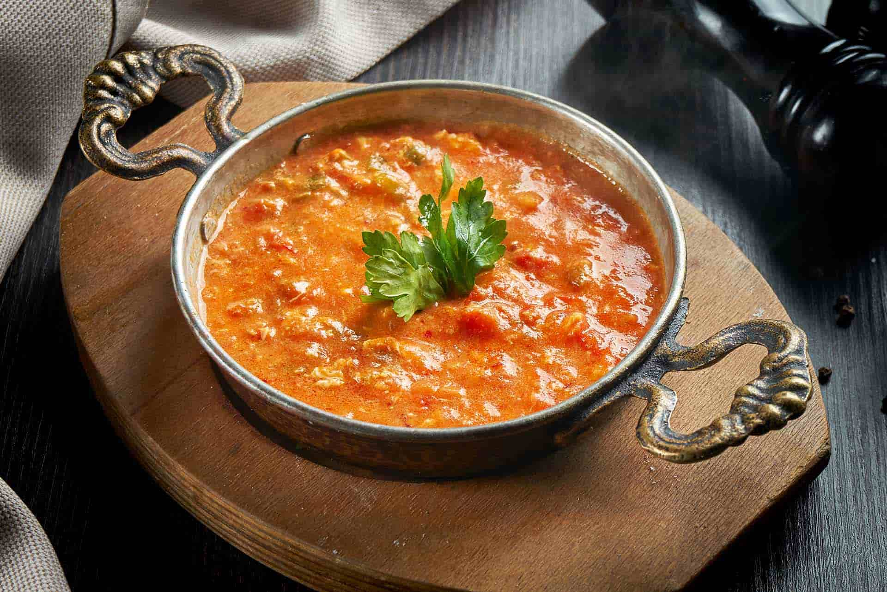

MENEMEN
 Her Türk'ün rüyası menemen ile karşınızdayım!
Gardınızı alın, menemen soğanlı mı yoksa soğansız mı olur sorusuna yanıt getireceğim.
Ya da bir ipucu vereyim, soğansız olusaydı onun adı "domatesli yumurta" olurdu!
Tarif: İrem Turna